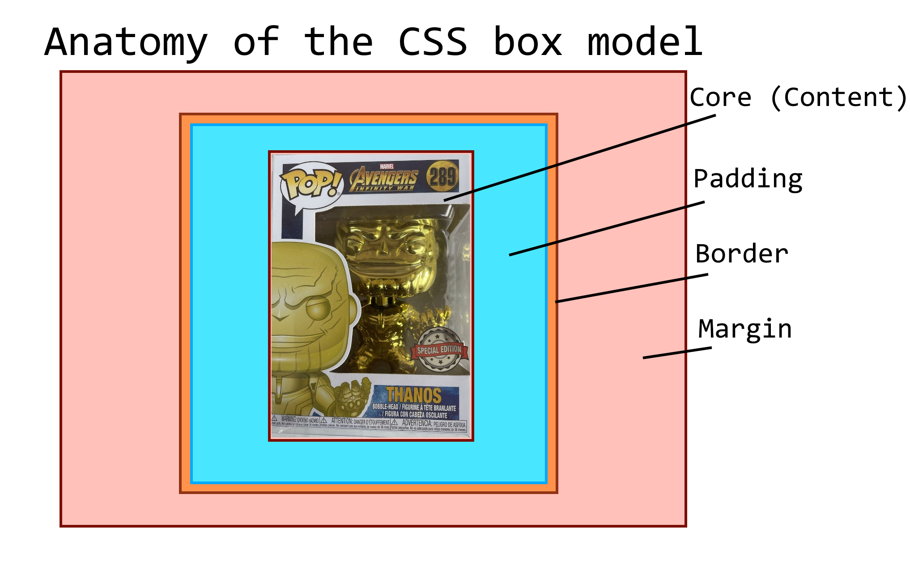

The CSS box model describes the box that wraps around every HTML element on a page. Margin, boarder and padding are tools we can use to control the shape and spacing of these html element "boxes". Before popping open the hood and getting more technical, lets start with an analogy!
Imagine your website page is actually a warehouse filled with boxes. The contents of a box, say a Limited edition golden thanos Funko Pop™, is the content (text or images). We want to protect our collectable, so we put some packaging around Thanos. This is the padding, which dictates how much space is between Thanos and the box he is contained in. Our boarder is the box itself, and can be made as thick or thin as we want, or even invisible! The margin is the empty space we leave between our box and other boxes around it, aswell as the walls (edge of the page).
Now we have a basic understanding of the three parts of a CSS box, lets see what a basic implementation of them would look like.
The code above defines a css box that looks a bit like this.
>